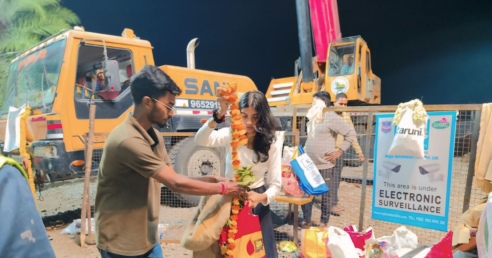
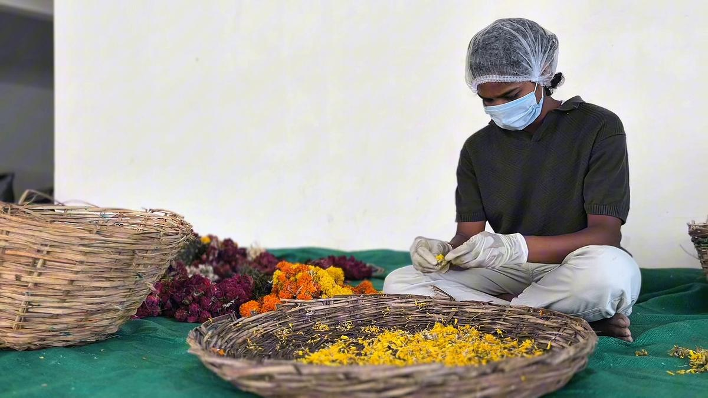
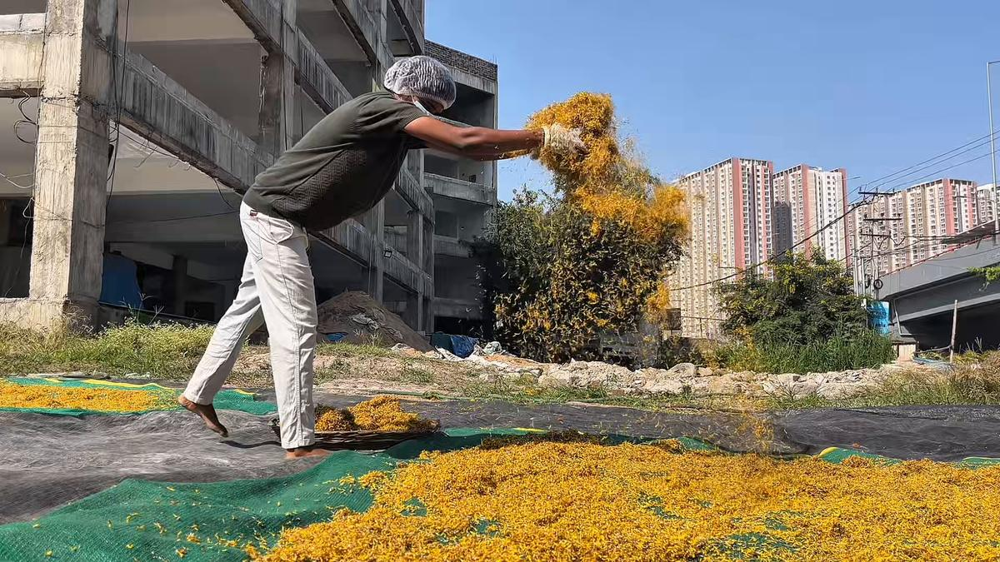
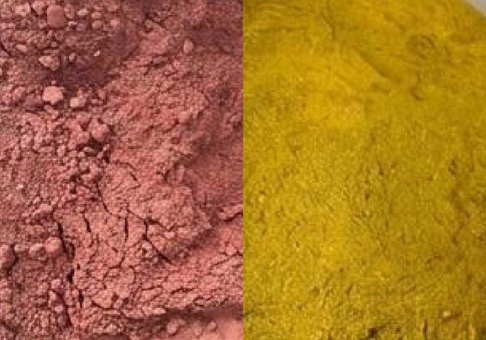
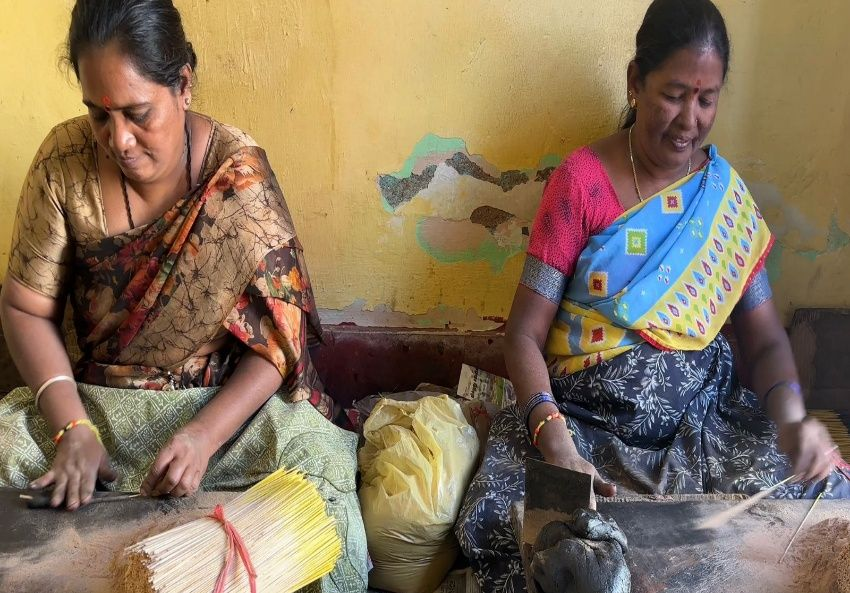
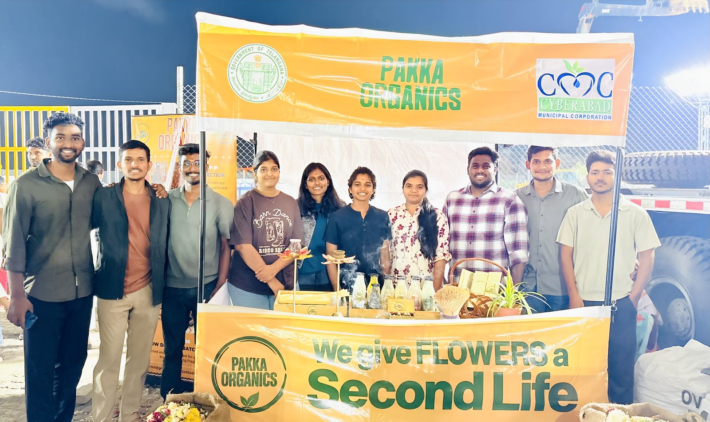

From Sacred Flowers to Sustainable Products
Pakka Organics collects flowers offered at religious ceremonies and during Ganesh visarjan, and turns them into incense, dhoop and other products for your home and puja room.
- We give flowers a second life
- Charcoal-free incense
- Rolled by hand
- Made from recycled flowers
- Light once, burns fully
- Order on WhatsApp
19.8tonnes of flowers recycled
Offered once. Used again.
Garlands and loose flowers offered in worship usually end the day as waste. We collect them at religious ceremonies and Ganesh visarjan points in Hyderabad and bring them back as products you can use at home.
- September 2025when we started collecting
- 6 to 8 womenemployed and trained
How it works
Five steps take a garland from the immersion point to an incense stick.
-

Collect
Garlands and loose flowers are handed over at our kiosks at visarjan points, and collected from temples and markets.
-

Clean and sort
Thread, plastic and other material are removed by hand, and the flowers are separated by type.
-

Sun-dry
Petals are spread out in the open and dried in the sun.
-

Powder
Dried petals are ground into a fine powder, ready for incense, dhoop and natural colours.
-

Hand-roll and pack
Sticks are rolled by hand, dried again, checked and packed.

We give flowers a second life
Flowers offered with devotion are usually thrown away within hours. We think they deserve better.
Since September 2025 we have been collecting them from immersion lakes, temples and markets in Hyderabad, working with the municipal corporations and with local women who sort, dry and roll them into incense.
Devotional. Sustainable. Livelihood.
Read Our StoryFeatured products
Add what you need to the cart and send the order to us on WhatsApp.
Media coverage
Watch how the collection drives were reported.

ETV Telangana, Yuva
Puja products made from flower waste.

11,000+ kg of flowers collected
Flowers collected with the support of the government.
Order on WhatsApp, or hand over your flowers
Message us and we will reply with availability, shipping and payment details.